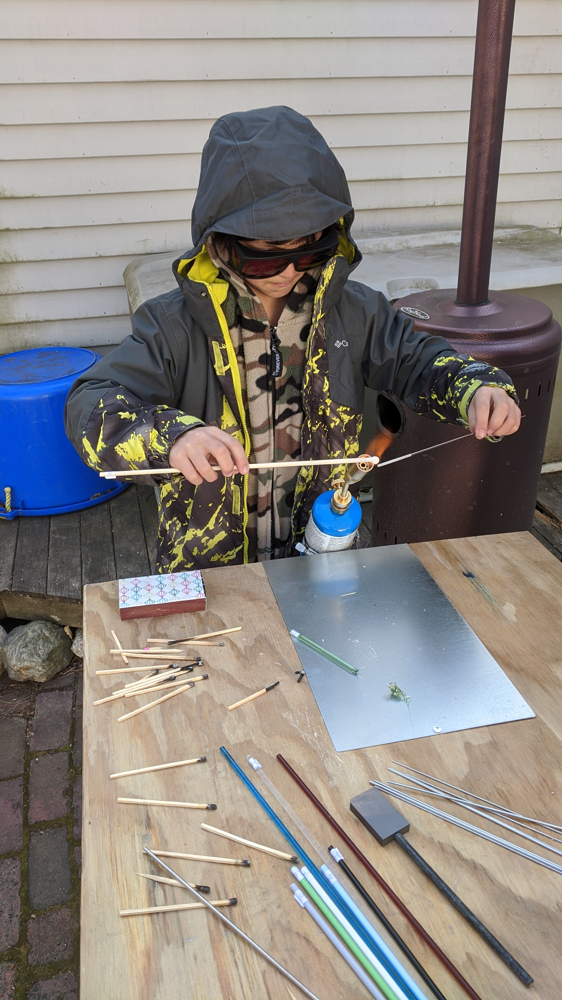

Meet Massachusetts Homeschoolers: The Benninga Family
By Pauline Benninga
I didn’t consider that a path outside of traditional public school even existed until my third and youngest child was in kindergarten. It was clear that she was unhappy in school to a degree that my two older boys hadn’t experienced. True, neither of them had particularly enjoyed their early school years, but they hadn’t regularly burst into tears during morning meeting, occasionally begged to skip school for the day, or retreated into sullen silence once home.
Something was wrong with the relationship between my daughter and public school. At that time, though, I had never thought about possibilities other than public school. So instead, I focused on trying to fix the “problem.”
I’d like to say that my daughter’s experience in kindergarten was already enough to convince me to homeschool. Unfortunately, it ended up taking years for me to see and accept a world beyond the walls of my limited public-school-centric vision. I tried—and failed—to find ways to make her fit the mold. I signed her up for extracurriculars she didn’t want, bought her supplemental materials she didn’t need. But it didn’t get much better. I kept bumping up against my own preconceived notions of what school should be, which in turn made me work all that harder to just fix things.
And then came the question from her second-grade teacher that would change everything.
“Have you ever considered an alternative school for her? Maybe a charter school or a private school? Something that would fit her better?”
It was like a switch had been flipped. My daughter’s experience in public school wasn’t a problem that needed to be fixed, per se, or that even could be. It was a mismatch—significantly so—and it’s almost impossibly challenging to “fix” a mismatch. Square pegs don’t fit into round holes without some serious damage being inflicted on one or both. The idea of settling for something that is inherently so destructive for the sole purpose of fitting into something already mismatched runs antithetical to our family values—and, I would argue, to the purpose of life itself.
My child did not belong in traditional public school, nor private, nor charter, nor even a collective. Intensely introverted and fiercely brilliant, her best fit was where she was most comfortable, curious, and full of joy. Home.
Suddenly, freed from the boundaries imposed upon me by my own limited worldview, I began to see that my middle child could also benefit significantly from a homeschool experience. Only a year older than my daughter, he had been “fine” taking the public school path. But by shifting my perspective—which, in hindsight, was a strangely Herculean task given how greatly it improved my child’s quality of life—a virtual universe of possibilities opened up. (For what it’s worth, my eldest is much older, close to college-aged, and happy in his private high school.)
We had planned to begin homeschooling this September. Once the decision was made, I spent the past year wrapping up my job (my husband and I made some very conscious cost-cutting decisions to make this work) and preparing curriculum.
So when coronavirus shut down the schools in March, it happened to be that I had almost everything in place to start our homeschooling journey right then, rather than wait for fall. Given how challenging life has been for many, I can’t quite call it serendipity. But I’d like to believe that it was an opportunity disguised as a challenge to accept that all of my worries (What if they don’t learn enough to be “successful”? What if they lose all their friends? What if homeschooling makes them weird? What if I hate it?) were for naught, and that tgether we’d been walking a path toward this moment for the past four years.
We tested the homeschooling waters from March through May and the children thrived. I sent in our education plan the first week of May, my confidence buoyed by this initial positive experience. I informed my boss that I would, regrettably, not be returning after lockdown restrictions were lifted. (I have mixed feelings about leaving work and the validation that provides, feelings that I’ve carried with me since we first began speaking in earnest about homeschooling. But that’s a different essay for a different time and place.)
What we knew in the spring about this choice has been reaffirmed since we began our new year at the end of August. Shorter school days, flexibility in the schedule to go for a hike or bake something fun, not having to hold an entire class behind due to the disciplinary needs of a single student, and—above all else—watching the joy of learning spark every day in my children—is what reminds me that this endeavor is worth the work.
I have to take a moment, too, to express how very grateful and fortunate I am that my daughter’s teachers never once raised the possibility that something was wrong with her. It was the prescribed approach to schooling that didn’t jibe with who my daughter is as a human being. They knew that, and they were indispensable guides for me toward the decision to homescool.
This intelligence and compassion on the part of her teachers is one of the many reasons why I am absolutely not trying to make some sort of case against public schooling. In fact, I am pro-public-school, pro-private-school, pro-whatever-best-educates-and-sustains-a-happy-child-and-doesn’t-strain-a-family’s-emotional-and-financial-health.
In our case, homeschool happened to be the right choice, the right answer, the right fit for us >y only regret is that I didn’t accept this approach sooner!
Born and raised in Texas, Pauline moved up to Massachusetts for college. After graduation, she spent time exploring the world and working in the tech industry. Despite the near-unbearable shock to her system that every New England winter delivers, she ended up settling just outside of Boston. Her three amazing kids enjoy snow sports while she sits by the fire and dreams of 100-degree dry desert heat. She is left-handed and, like her middle child, prefers cats to dogs. Pauline blogs sporadically and sometimes incoherently about her homeschooling experience at grassrootedliving.com.